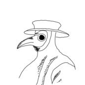

<!doctype html>
<html lang="en">

<head>
    <title>Gameful Design - Die Pest</title>
   <!-- Required meta tags -->
   <meta charset="utf-8">
   <meta name="viewport" content="width=device-width, initial-scale=1, shrink-to-fit=no">

   <!-- Bootstrap CSS -->
   <link rel="stylesheet" href="https://stackpath.bootstrapcdn.com/bootstrap/4.3.1/css/bootstrap.min.css"
      integrity="sha384-ggOyR0iXCbMQv3Xipma34MD+dH/1fQ784/j6cY/iJTQUOhcWr7x9JvoRxT2MZw1T" crossorigin="anonymous">
</head>

<body>

   <!-- Optional JavaScript -->
   <!-- jQuery first, then Popper.js, then Bootstrap JS -->
   <script src="https://code.jquery.com/jquery-3.3.1.slim.min.js"
      integrity="sha384-q8i/X+965DzO0rT7abK41JStQIAqVgRVzpbzo5smXKp4YfRvH+8abtTE1Pi6jizo"
      crossorigin="anonymous"></script>
   <script src="https://cdnjs.cloudflare.com/ajax/libs/popper.js/1.14.7/umd/popper.min.js"
      integrity="sha384-UO2eT0CpHqdSJQ6hJty5KVphtPhzWj9WO1clHTMGa3JDZwrnQq4sF86dIHNDz0W1"
      crossorigin="anonymous"></script>
   <script src="https://stackpath.bootstrapcdn.com/bootstrap/4.3.1/js/bootstrap.min.js"
      integrity="sha384-JjSmVgyd0p3pXB1rRibZUAYoIIy6OrQ6VrjIEaFf/nJGzIxFDsf4x0xIM+B07jRM"
      crossorigin="anonymous"></script>

</body>

</html>
<!DOCTYPE html>
<html lang="en">

<head>
   <meta charset="UTF-8">
   <meta http-equiv="X-UA-Compatible" content="IE=edge">
   <meta name="viewport" content="width=device-width, initial-scale=1.0">
   <title>Document</title>
   <link rel="stylesheet" href="style.css">
</head>

<body>
   <div id="mySidenav" class="sidenav">
      <a href="javascript:void(0)" class="closebtn" onclick="closeNav()">&times;</a>
      <a href="#">Geschichte</a>
      <a href="#">Klasse 5</a>
      <a href="#">Die Pest</a>
      <a href="#">Hilfe</a>
   </div>

   <!-- Use any element to open the sidenav -->
   <span onclick="openNav()">Menü</span>

   <!-- Add all page content inside this div if you want the side nav to push page content to the right (not used if you only want the sidenav to sit on top of the page -->
   <div id="main">
      <div class="container-fluid">
         <div class="row">
            <div class="col-sm-12 toppart">
               <p>DIE PEST</p>
            </div>

         </div>

         <div class="row">
            <div class="col-sm-12 subject">
               <p> Der schwarze Tod Europas </p>
            </div>
         </div>
         <div class="row">
            <div class="col-sm-6 intro">
               
            </div>
            <div class="col-sm-6 intro">
               <p class="whitetext slightlybigger"> Ungefähr in der Mitte des 14. Jahrhunderts kam es in der europäischen Bevölkerung zu großem Leid, da viele Menschen von einer gefährlichen, bisher unbekannten Seuche heimgesucht worden sind. Die Rede ist von der Pest, einer hochansteckenden Infektionskrankheit, die auch unter dem Namen Schwarzer Tod bekannt ist. 
               </p>
               <br>
               <p class="whitetext">Die Pest kam das erste Mal um das Jahr 1347, vermutlich über Handelsschiffe aus dem Orient, auf europäisches Festland, und zwar in die Hafenstadt Caffa, die sich in der heutigen Ukraine befindet. Von dort aus breitete sie sich über die vielen verschiedenen Handelsrouten in alle Ecken Europas aus.
               Die schlechten Hygienebedingungen und das Fehlen von medizinischem Wissen und Behandlungsmöglichkeiten beschleunigten die ohnehin schon rasante Verbreitung der Krankheit in Europa. Da zu Beginn der Pandemie noch nicht klar war, wie ansteckend die Pest ist, wurden Infizierte in örtliche Krankenhäuser gebracht, wo sie andere Kranke ansteckten. <br>
               <br>
               Um sich zu schützen, trugen die Menschen Tücher und Masken vor dem Gesicht und verbrannten duftende Hölzer und Kräuter, um gegen die Krankheit anzukämpfen, dies blieb allerdings erfolglos.
               Erst nachdem bereits mehrere Hunderttausend Menschen gestorben waren, kam den Menschen die Idee der Isolation – damit ist der Vorgang gemeint, dass Erkrankte sich von gesunden Menschen fernhalten mussten, um eine mögliche Ansteckung zu verhindern. Außerdem kennzeichnete man die Türen der Häuser von Erkrankten mit einem Kreuz, später mussten betroffene Menschen sogar aus den Städten ziehen – eine Maßnahme, die viele Familien zerriss.

                  

            </div>
         </div>


         <div class="orangeback">
            <p class="bilder">Siehe was sich hinter den Bildern versteckt!</p>
            <div class="row">
               <div class="col-sm-3">
                  <a data-toggle="tooltip" data-placement="bottom" title="Zur Behandlung nahmen die Ärzte an den Kranken einen sogenannten Aderlass vor. Sie schnitten dabei die Venen der Kranken auf, und ließen oft mehrere Liter Blut ab, um so die Krankheitskeime aus dem Körper zu spülen. Diese Art der Behandlung stieß allerdings auf keinen Erfolg – im Gegenteil: Heutzutage ist nachgewiesen, dass ein Aderlass den Patienten mehr geschadet als geholfen hat">
                  <div class="circle-container">
                     <div class="outer-ring"></div>
                     
                     <div class="circle">
                        <div class="back">
                           <p>Pestdoktor</p>
                        </div>
                        <div class="front">
                           <i class=" back-logo "></i>
                           
                        </div>
                     </div>
                  </div>
                  </a>
               </div>

               <div class="col-sm-3">
                  <a data-toggle="tooltip" data-placement="bottom" title="Durch die schlechten Hygienebedingungen der damaligen Zeit wurden auch die vielen Kleintiere wie z.B. Ratten, die in den dreckigen Straßen der Städte lebten, mit der Pest infiziert und trugen in Folge einen wesentlichen Beitrag zur Verbreitung der Pest bei: Sie steckten damit Flöhe an, die wiederum die Menschen ansteckten – eine Tatsache, die den Menschen der damaligen Zeit leider nicht bewusst war.">
                  <div class="circle-container">
                     <div class="outer-ring"></div>

                     <div class="circle">
                        <div class="back">
                           <p>Ratte</p>
                        </div>
                        <div class="front">
                           <i class=" back-logo-ratte "></i>
                           
                        </div>
                     </div>
                  </div>
               </a>
               </div>

               <div class="col-sm-3">
                  <a data-toggle="tooltip" data-placement="bottom" title="Die Symptome der Pest waren hohes Fieber, die Bildung vieler schmerzhafter dunkler Beulen am ganzen Körper und der Tod nach kurzer Zeit. Durch die weite Verbreitung brachte die Pest in Europa ein Massensterben hervor, dessen Ausmaß damals keiner erahnen konnte: In den  Jahren von 1346 bis 1353 starben in Europa geschätzt 25 Millionen Menschen an den Folgen einer Pesterkrankung, das entspricht einem Drittel der Bevölkerung, die damals lebte.">
                     <div class="circle-container">
                     <div class="outer-ring"></div>

                     <div class="circle">
                        <div class="back">
                           <p>Bakterium</p>
                        </div>
                        <div class="front">
                           <i class=" back-logo"></i>
                           
                        </div>
                     </div>
                  </a>
                  </div>

               </div>

               <div class="col-sm-3">
                  <a data-toggle="tooltip" data-placement="bottom" title="Die damalige Bevölkerung suchte einen Auslöser bzw. Verantwortliche für den Auslöser und den Folgen der Krankheit und fand diesen in den Juden. Man warf damals den Juden vor, Schuld an der Verbreitung der Pest zu haben und absichtlich die Brunnen vergiftet zu haben. Dieser Glaube wurde vor allem dadurch angefeuert, da die Juden aufgrund ihrer vorgeschriebenen Reinheitsvorschriften einen wesentlich höheren Hygienestandard als der Rest der Bevölkerung hatten, und somit auch weniger von der Pest betroffen waren. Nach der Pest gab es aufgrund solcher Judenpogrome fast keine jüdische Bevölkerung mehr in Europa.">
                  <div class="circle-container">
                     <div class="outer-ring"></div>

                     <div class="circle">
                        <div class="back-small">
                           <p>Judenprogrome</p>
                        </div>
                        <div class="front">
                           <i class=" back-logo"></i>
                           
                        </div>
                     </div>
                  </div>
               </a>
               </div>
            </div>

         </div>
         <p class="lückentext">Jetzt bist du dran!</p> 
         <h1>Würdest du die Pest überstehen?</h1>
         <main id="main">
	         <form id="quiz" action="">
		      <p id="intro">Nachfolgend findest du dich selbst in das Jahr xy zurückversetzt. Entscheide dich weiße!</p>
         </main>
      </div>
      <div class="orangeback-light">
         <p class="students">Gameful Design SS2021
            <br>
            Aaron Bauer | 11832834
            <br>
            Alexandra Rau | 11929134
            <br>
            Michael Resch | 11805838
         </p>
      </div>
      <div class="orangeback">
         <footer>
            <a href="/about/">Impressum</a> | <a href="/aboutdata/">Datenschutz</a>
            <p align="right"><a href="/login/">Anmelden</a> </p>


         </footer>
      </div>

      <script>
         function openNav() {
            document.getElementById("mySidenav").style.width = "250px";
         }

         function closeNav() {
            document.getElementById("mySidenav").style.width = "0";
         }
      
         if (!Array.from) {
	      Array.from = (function () {
		var toStr = Object.prototype.toString;
		var isCallable = function (fn) {
			return typeof fn === 'function' || toStr.call(fn) === '[object Function]';
		};
		var toInteger = function (value) {
			var number = Number(value);
			if (isNaN(number)) {
				return 0;
			}
			if (number === 0 || !isFinite(number)) {
				return number;
			}
			return (number > 0 ? 1 : -1) * Math.floor(Math.abs(number));
		};
		var maxSafeInteger = Math.pow(2, 53) - 1;
		var toLength = function (value) {
			var len = toInteger(value);
			return Math.min(Math.max(len, 0), maxSafeInteger);
		};
		// The length property of the from method is 1.
		return function from(arrayLike /*, mapFn, thisArg */ ) {
			// 1. Let C be the this value.
			var C = this;
			// 2. Let items be ToObject(arrayLike).
			var items = Object(arrayLike);
			// 3. ReturnIfAbrupt(items).
			if (arrayLike == null) {
				throw new TypeError(
					"Array.from requires an array-like object - not null or undefined");
			}
			// 4. If mapfn is undefined, then let mapping be false.
			var mapFn = arguments.length > 1 ? arguments[1] : void undefined;
			var T;
			if (typeof mapFn !== 'undefined') {
				// 5. else
				// 5. a If IsCallable(mapfn) is false, throw a TypeError exception.
				if (!isCallable(mapFn)) {
					throw new TypeError(
						'Array.from: when provided, the second argument must be a function');
				}
				// 5. b. If thisArg was supplied, let T be thisArg; else let T be undefined.
				if (arguments.length > 2) {
					T = arguments[2];
				}
			}
			// 10. Let lenValue be Get(items, "length").
			// 11. Let len be ToLength(lenValue).
			var len = toLength(items.length);
			// 13. If IsConstructor(C) is true, then
			// 13. a. Let A be the result of calling the [[Construct]] internal method 
			// of C with an argument list containing the single item len.
			// 14. a. Else, Let A be ArrayCreate(len).
			var A = isCallable(C) ? Object(new C(len)) : new Array(len);
			// 16. Let k be 0.
			var k = 0;
			// 17. Repeat, while k < len… (also steps a - h)
			var kValue;
			while (k < len) {
				kValue = items[k];
				if (mapFn) {
					A[k] = typeof T === 'undefined' ? mapFn(kValue, k) : mapFn.call(T,
						kValue, k);
				} else {
					A[k] = kValue;
				}
				k += 1;
			}
			// 18. Let putStatus be Put(A, "length", len, true).
			A.length = len;
			// 20. Return A.
			return A;
		};
	}());
}
'use strict';
var myQuiz = {
	container: null,
	// helper function
	createElement: function (o) {
		var el, p;
		if (o && (o.tag || o.tagName)) {
			el = document.createElement(o.tag || o.tagName);
			if (o.text || o.txt) {
				var text = (o.text || o.txt)
				el.innerHTML = text;
			}
			for (p in o) {
				if (!p.match(/^t(e)?xt|tag(name)?$/i)) {
					el[p] = o[p];
				}
			}
		}
		return el;
	},
	// user interface for a quiz question
	createOptions: function () {
		var t = this,
			options = [],
			ul = document.createElement("ul");
		t.emptyContainer();
		t.intoContainer(t.createElement({
			tag: "h2",
			text: t.currentQuestion.question
		}));
		t.intoContainer(ul);
		// create options
		options.push(t.currentQuestion.solution);
		t.currentQuestion.falses.forEach(function (s) {
			options.push(s);
		});
		t.shuffleArray(options);
		options.forEach(function (s, i) {
			var li = document.createElement("li"),
				label = t.createElement({
					htmlFor: "a" + t.questions.length + "_" + i,
					tag: "label",
					text: s
				}),
				radio = t.createElement({
					id: "a" + t.questions.length + "_" + i,
					name: "answer",
					tag: "input",
					type: "radio",
					tabindex: "0",
					value: s
				});
			ul.appendChild(li);
			li.appendChild(radio);
			li.appendChild(label);
		});
		// Hinweis für Tastatur-User
		t.intoContainer(t.createElement({
			tag: "button",
			text: "confirm choice",
			type: "submit"
		}));
	},
	currentChoices: [],
	currentQuestion: null,
	
	data: [{
		question:'<table style="width:100%"> <tr> <td style="width:40%"> </td> <td style="width:60%"> Stell’ dir vor, wir haben das Jahr 1348 und die Pest fängt gerade an, sich in Europa auszubreiten. Du kommst mit deiner Familie in Europa an, und versuchst deine Liebsten bestmöglich vor einer Infektion zu schützen. Ihr wollt euch hier sesshaft machen, doch es ist noch unklar, wo genau ihr neue Heimat wählt. Wo würdest du zur Zeit der Pest am liebsten Leben?</td></tr></table>',
		solution: 'Abgelegen in den Bergen',
		falses: ['In einer Hafenstadt','In einer Handelsstadt','Auf einem Schiff'],
		explanation: 'Hafenstädte waren das Tor für die Pest, um nach Europa zu kommen. Wohnungen mit Meerblick sind nicht der beste Wohnort zu Zeit der Pest. Da sich in Handelsstädten viele Menschen aus den verschiedensten Regionen aufhielten, gab es eine hohe Wahrscheinlichkeit, dass die Pest eingeschleppt wurde. Daher ist dies ebenfalls keine gute Wahl. Mit vielen anderen Männern unter schlechten Hygienebedingungen auf engem Raum zu leben, sowie unzählige Ratten machen das Leben auf einem Schiff zu einer schlechten Wahl. Solange die Nahrungsmittel nicht ausgingen, war der Beste Ort, um zu Leben abgelegen in den Bergen. Umso abgeschotteter der Wohnort, umso schwerer fand die Pest einen Weg dorthin.)'
	}, {
		question: '<table style="width:100%"> <tr> <td style="width:40%"> </td> <td style="width:60%"> Du entscheidest dich, ein Haus in den Bergen, abseits von einem kleinen Dorf als neue Heimat zu wählen. Je abgelegener desto besser, hier wird die Pest hoffentlich nicht herfinden! Um deine Familie erhalten zu können, musst du natürlich auch etwas Geld verdienen, dazu suchst du dir am besten einen passenden Beruf! Welchen Beruf würdest du zur Zeit der Pest wählen?</td></tr></table>',
		solution: ['Totengräber', 'Fahrender Händler'],
		falses: ['Seemann', 'Geistlicher'],
		explanation: 'Als Seemann mit vielen anderen Männern unter schlechten Hygienebedingungen auf engem Raum zu leben, sowie unzählige Ratten machen das Arbeiten auf einem Schiff zu einer schlechten Wahl. Man lebte unter Bedingungen die optimal für eine Verbreitung der Pest waren. Geistliche hatten während der Zeit der Pest keine angenehme Arbeit. Menschenversammlungen in der Kirche waren Gang und Gebe. Kranken Menschen die Sterbesakramente zu geben stellte ebenfalls eine erhöhte Infektionsgefahr da. Totengräber war wahrscheinlich einer der sichersten Berufe der Zeit. Flöhe kamen auf den Verstorbenen nicht mehr vor. Wenn die Körpertemperatur nach dem Tod sinkt, gefällt es auch dem Floh nicht mehr und er sucht sich einen neuen Wirt. Wenn man sich auch von den infizierten Körperflüssigkeiten ferngehalten hat, konnte eigentlich bei der Arbeit nichts passieren. Als Händler nicht an einen Ort gebunden zu sein, war sicher gut. Ob viele Händler überlebt haben, ist nicht bekannt.'
	}, {
		question: '<table style="width:100%"> <tr> <td style="width:40%"> </td> <td style="width:60%"> Nach einiger Zeit in deinem Beruf, bekommst du zu hören, dass sich die Pest mittlerweile auch in dem kleinen Dorf neben deinem Haus ausgebreitet hat. Deine Familie fürchtet sich davor, ebenfalls angesteckt zu werden.Wie könntest du dich vor einer Ansteckung der Pest schützen?</td></tr></table>',
		solution: ['Masken tragen','Abstand halten (2 baby Elefanten)'],
		falses: ['Tiere streicheln','Das eigene Gewand nicht wechseln'],
		explanation: 'Während der Pest sollte man sich auch vom süßesten Kätzchen fernhalten. Die Pestflöhe kamen zwar von den Ratten, konnten aber auch auf andere Lebewesen überspringen. Gegen eine Infektion über den Floh, hilft eine Gesichtsmaske leider nicht. Gegen die Tröpfcheninfektion über einen anderen Menschen Hilft sie hingegen schon. Sich von anderen Menschen fernhalten, wäre wahrscheinlich die beste Option gewesen. So ging man Flöhen und kranken Personen aus dem Weg. Das eigene Gewand nicht zu wechseln, wäre eine fatale Entscheidung. Dann seid ihr ein Vergnügungspark für Flöhe. Und für die Pest.'
	}, {
		question: '<table style="width:100%"> <tr> <td style="width:40%"> </td> <td style="width:60%"> Einige Wochen vergehen - Da die Pest mittlerweile die Kontrolle über die Gegend deines Wohnorts übernommen hat, willst du deine Familie darüber aufklären, an welche Orte der Umgebung sie sich begeben dürfen, und welche sie auf jeden Fall vermeiden sollten. Welcher Ort ist sicher zur Zeit der Pest?</td></tr></table>',
		solution: 'Wohnheim',
		falses: ['Krankenhaus','Kirche','Marktplatz im Dorf'],
		explanation: 'Obwohl man sich Krankenhäuser heutzutage als sehr saubere und sichere Orte vorstellt, war die Situation im Mittelalter genau umgekehrt. Viele Infizierte wurden in Krankenhäusern behandelt und durch die schlechten Hygienebedingungen wurden sie zu einem Infektions-Hotspot. Es wäre also keine gute Idee, sich in ein Haus voll Pestkranker zu begeben. Die Kirche ist kein guter Ort, sich während der Pestpandemie aufzuhalten. Das Risiko, das einer der anderen Kirchgänger die Pest hat und ansteckend ist, ist viel zu hoch. Generell gilt: Menschenmassen sollten bestmöglich gemieden werden. Der Marktplatz ist so wie alle anderen öffentlichen Plätze kein guter Ort, um sich währen der Pestpandemie aufzuhalten. Es besteht ein hohes Risiko, dass man von einem Passanten mit der Pest angesteckt wird. Das eigene Haus war üblicherweise der sicherste Ort, solange man keinen Besuch empfing und niemand in der Familie krank war.'
	}, {
		question: '<table style="width:100%"> <tr> <td style="width:40%"> </td> <td style="width:60%"> Keine guten Neuigkeiten – Trotz des Einhaltens deiner gesetzten Maßnahmen, zeigt eines deiner Familienmitglieder Symptome einer Pesterkrankung. Was ist der beste Schritt um weitere Infektionen in deiner Familie zu vermeiden?</td></tr></table>', 
		solution: 'Das infizierte Familienmitglied zurücklassen/aussetzen',
		falses: ['Das Familienmitglied pflegen','Einen Aderlass am infizierten Familienmitglied vornehmen','Beten, dass es dem infizierten Familienmitglied bald besser geht'],
		explanation: 'Obwohl dies wohl die familienfreundlichste Möglichkeit ist, führt sie hier leider nicht zum Ziel. Im Mittelalter gibt es noch keine guten Behandlungsmöglichkeiten, und es ist wahrscheinlicher, sich selbst mit der Pest anzustecken, als das angesteckte Familienmitglied von der Krankheit zu befreien. Der Aderlass ist eine Behandlungsmethode, die während der Pestpandemie oft von Medizinern vorgenommen wurde. Heute weiß man, dass dies dem Erkrankten mehr geschadet als geholfen hat, deswegen ist davon definitiv abzuraten. (Viele hielten damals den Ausbruch der Pest für eine Strafe Gottes. Auch wenn die Krankheit dadurch nicht gelindert wurde, wendeten sich die Menschen in Zeiten der Not an den Gott. Da der Wissensstand über Infektionskrankheiten im Mittelalter noch sehr gering war, hat den Glauben der Bevölkerung an das Übersinnliche noch weiter verstärkt). Auch wenn es sicher schwerfällt, seine eigenen Familienmitglieder zurückzulassen, ist es die beste Möglichkeit um sich selbst und seine restliche Familie vor weiteren Infektionen zu schützen. Da die Familien auch schon im Mittelalter zusammengehalten haben, wurde diese Maßnahme nicht immer gesetzt und daraufhin war oft die ganze Familie von der Pest befallen.'
	}, {
		question: '<table style="width:100%"> <tr> <td style="width:40%"> </td> <td style="width:60%"> Der örtliche Bischof kommt alleine nicht mit der Lage des Dorfes zurecht und bittet dich deshalb um Rat, welche Maßnahmen vorzunehmen sind, um die weitere Ausbreitung der Pest im Dorf möglichst zu verhindern. Welche Maßnahmen empfiehlst du dem Bischof?</td></tr></table>',
		solution: 'Quarantäne',
		falses: ['Bußprozessionen', 'Häuser ausräuchern.'],
		explanation: 'Die damaligen Bischöfe versuchten die Ansteckungen tatsächlich durch Bußprozessionen zu verringern, die großen Menschenmengen, bei denen sie stattfanden, kamen leider nicht zu Vorteil. Das Ausräuchern von Häusern war eine Methode, die im Mittelalter oft praktiziert wurde. Ob sie tatsächlich etwas gebracht hat, ist nicht bekannt. Die Quarantäne ist bis heute die effektivste Möglichkeit, um die Ausbreitung ansteckender Krankheiten einzudämmen.'
	}, {
		question: '<table style="width:100%"> <tr> <td style="width:40%"> </td> <td style="width:60%"> Um sich noch besser von der Pest schützen zu können, schlägt dir ein Bekannter vor, sich ein Haustier zu beschaffen, da Pestbakterien anscheinend Angst vor Tieren haben und diese meiden. Welches Haustier wäre zur Zeit der Pest am besten?</td></tr></table>',
		solution: 'Keines',
		falses: ['Ratte', 'Katzen', 'Hund'],
		explanation: 'Eine Ratte als Haustier zu nehmen wäre so, als würde man sich die Pest per Post nach Hause bestellen, deshalb lieber nicht! Katzen können zwar mit Flöhen befallene Ratten fangen, sie können aber auch selber Flöhe haben. Deshalb sollte man sich lieber keine Katze als Haustier nehmen. Hunde fangen leicht pestbefallene Flöhe auf, die widerum Menschen anstecken können. Keine gute Idee. Kein Haustier ist wahrscheinlich die beste Wahl - Ein Flohteppich weniger im Haushalt.'
	}, {
		question: '<table style="width:100%"> <tr> <td style="width:40%"> </td> <td style="width:60%"> Obwohl die Pest Menschen aus jeder Altersgruppe befallen hat, zeigten Menschen einer Altersgruppe wesentlich höhere Überlebenschancen als die anderen. Welche glaubst du ist das? Welcher Altersgruppe müsstest du angehören, um die größte Überlebenschance zu haben?</td></tr></table>',
		solution: 'Erwachsener',
		falses: ['Jugendlicher','Kind'],
		explanation: 'Das wegen des Alters noch schwache Immunsystem sowie die im Mittelalter übliche Unterernährung von Jugendlichen sind beides Faktoren, die sich negativ auf die Überlebenschance von Jugendlichen ausgewirkt hat. Das wegen des Alters noch schwache Immunsystem sowie die im Mittelalter übliche Unterernährung von Kindern sind beides Faktoren, die sich negativ auf die Überlebenschance von Kindern ausgewirkt hat. Erwachsene hatten meistens ein stärkeres Immunsystem und bessere Abwehrkräfte als Kinder und Jugendlichen und haben die Pest daher eher überstanden.' 
	}, ],
	emptyContainer: function () {
		var t = this;
		while (t.container.firstChild) {
			t.container.removeChild(t.container.firstChild);
		}
	},
	handleInput: function () {
		var t = this, // t points to myQuiz
			// create real array so we can use forEach
			inputs = Array.from(t.container.getElementsByTagName("input")),
			selectedSolution = "";
		// determine selection
		inputs.forEach(function (o) {
			if (o.checked) {
				selectedSolution = o.value;
			}
		});
		// process selected answer
		if (selectedSolution && t.currentQuestion) {
			t.currentChoices.push({
				a: selectedSolution,
				q: t.currentQuestion
			});
			t.play();
		}
		// accept start button
		if (!t.currentQuestion) {
			t.play();
		}
	},
	init: function () {
		var t = this;
		// here goes any code for loading data from an external source
		t.container = document.getElementById("quiz");
		if (t.data.length && t.container) {
			// use anonymous functions so in handleInput
			// "this" can point to myQuiz
			t.container.addEventListener("submit", function (ev) {
				t.handleInput();
				ev.stopPropagation();
				ev.preventDefault();
				return false;
			});
			t.container.addEventListener("mouseup", function (ev) {
				// we want to only support clicks on start buttons...
				var go = ev.target.tagName.match(/^button$/i);
				// ... and labels for radio buttons when in a game
				if (ev.target.tagName.match(/^label$/i) && t.currentQuestion) {
					go = true;
				}
				if (go) {
					window.setTimeout(function () {
						t.handleInput();
					}, 50);
					ev.stopPropagation();
					ev.preventDefault();
					return false;
				}
			});
			t.start();
		}
	},
	intoContainer: function (el, parentType) {
		var t = this,
			parent;
		if (!el) {
			return;
		}
		if (parentType) {
			parent = document.createElement(parentType);
			parent.appendChild(el);
		} else {
			parent = el;
		}
		t.container.appendChild(parent);
		return parent;
	},
	// ask next question or end quiz if none are left
	play: function () {
		var t = this,
			ol;
		// game over?
		if (!t.questions.length) {
			t.showResults();
			// offer restart
			window.setTimeout(function () {
				t.start();
			}, 50);
			return;
		}
		t.currentQuestion = t.questions.shift();
		t.createOptions();
	},
	// list with remaining quiz question objects
	questions: [],
	// list original questions and given answers and elaborate on solutions
	showResults: function () {
		var cat, ol, s, scores = {},
			t = this,
			tab, thead, tbody, tr;
		t.emptyContainer();
		// show message
		t.intoContainer(t.createElement({
			tag: "p",
			text: "Toll gemacht! Lass uns deine Antworten anschauen:"
		}));
		// list questions and given answers
		ol = t.intoContainer(t.createElement({
			id: "result",
			tag: "ol"
		}));
		t.currentChoices.forEach(function (o) {
			var p, li = ol.appendChild(t.createElement({
				tag: "li"
			}));
			// list original question
			li.appendChild(t.createElement({
				className: "question",
				tag: "p",
				text: o.q.question
			}));
			// list given answer
			p = li.appendChild(t.createElement({
				tag: "p",
				text: "Deine Antwort: "
			}));
			p.appendChild(t.createElement({
				className: (o.q.solution == o.a ? "correct" : "wrong"),
				tag: "em",
				text: o.a
			}));
			// wrong answer?
			if (o.q.solution != o.a) {
				p = li.appendChild(t.createElement({
					tag: "p",
					text: "Die richtige Antwort wäre gewesen: "
				}));
				p.appendChild(t.createElement({
					tag: "em",
					text: o.q.solution
				}));
			}
			// elaborate on solution?
			if (o.q.explanation) {
				p = li.appendChild(t.createElement({
					tag: "p",
					text: "Erläuterung: "
				}));
				p.appendChild(t.createElement({
					tag: "em",
					text: o.q.explanation
				}));
			}
		});
		
		// show message
		t.intoContainer(t.createElement({
			tag: "p",
			text: "Möchtest du es noch einmal probieren?"
		}));
	},
	// helper function: shuffle array (adapted from http://javascript.jstruebig.de/javascript/69)
	shuffleArray: function (a) {
		var i = a.length;
		while (i >= 2) {
			var zi = Math.floor(Math.random() * i);
			var t = a[zi];
			a[zi] = a[--i];
			a[i] = t;
		}
		// no return argument since the array has been
		// handed over as a reference and not a copy!
	},
	// start quiz with a start button
	start: function () {
		var t = this;
		// fill list of remaining quiz questions
		t.questions = [];
		t.data.forEach(function (o) {
			t.questions.push(o);
		});
		t.shuffleArray(t.questions);
		t.currentChoices = [];
		t.currentQuestion = null;
		// install start button
		t.intoContainer(t.createElement({
			className: "startBtn",
			tag: "button",
			text: "Los geht's!"
		}), "p");
	}
};
document.addEventListener("DOMContentLoaded", function () {
	myQuiz.init();
});

// Select all elements with data-toggle="tooltips" in the document
$('[data-toggle="tooltip"]').tooltip();

      </script>


</body>

</html>
